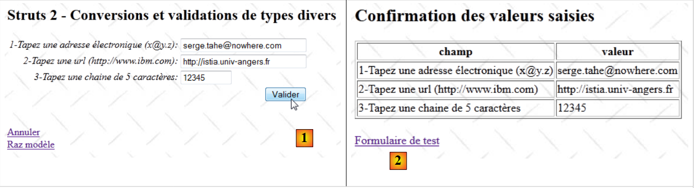

15. Exemple 12 – Conversions et validations diverses
La nouvelle application présente la saisie de divers éléments disposant de validateurs Struts :
 |
- en [1], le formulaire de saisie
- en [2], la confirmation des saisies
L'application a un fonctionnement similaire aux précédentes aussi ne commenterons-nous que les points qui diffèrent.
15.1. Le projet Netbeans
Le projet Netbeans est le suivant :
 |
- en [1], les vues de l'application
- [Accueil.JSP] : la page d'accueil
- [FormDivers.JSP] : le formulaire de saisie
- [ConfirmationFormDivers.JSP] : la page de confirmation
- en [2], le fichier des messages [messages.properties] et le fichier de configuration principal de Struts
- en [3] :
- [FormDivers.java] : l'action qui affiche et traite le formulaire
- [FormDivers-validation.xml] : les règles de validation de l'action [FormDivers]. Ce fichier délègue ces validations au modèle.
- [FormDiversModel] : le modèle de l'action [FormDivers]
- [ FormDiversModel-validation.xml] : les règles de validation du modèle
- [FormDiversModel.properties] : le fichier des messages du modèle
- [example.xml] : fichier de configuration secondaire de Struts
15.2. La configuration du projet
Le projet est principalement configuré par le fichier [example.xml] suivant :
<?xml version="1.0" encoding="UTF-8" ?>
<!DOCTYPE struts PUBLIC
"-//Apache Software Foundation//DTD Struts Configuration 2.0//EN"
"http://struts.apache.org/dtds/struts-2.0.dtd">
<struts>
<package name="example" namespace="/example" extends="struts-default">
<action name="Accueil">
<result name="success">/example/Accueil.JSP</result>
</action>
<action name="FormDivers" class="example.FormDivers">
<result name="input">/example/FormDivers.JSP</result>
<result name="cancel" type="redirect">/example/Accueil.JSP</result>
<result name="success">/example/ConfirmationFormDivers.JSP</result>
</action>
</package>
</struts>
Il est analogue à celui qui a été étudié dans les version précédentes.
15.3. Les fichiers des messages
Le fichier [messages.properties] est le suivant :
Accueil.titre=Accueil
Accueil.message=Struts 2 - Conversions et validations
Accueil.FormDivers=Saisies diverses (email, URL, chaine de caract\u00e8res avec contr\u00f4le du nombre de caract\u00e8res)
Form.titre=Conversions et validations
FormDivers.message=Struts 2 - Conversions et validations de types divers
Form.submitText=Valider
Form.cancelText=Annuler
Form.clearModel=Raz mod\u00e8le
Confirmation.titre=Confirmation
Confirmation.message=Confirmation des valeurs saisies
Confirmation.champ=champ
Confirmation.valeur=valeur
Confirmation.lien=Formulaire de test
xwork.default.invalid.fieldvalue=Valeur invalide pour le champ "{0}".
Le fichier [FormDiversModel.properties] est le suivant :
email.prompt=1-Tapez une adresse \u00E9lectronique (x@y.z)
email.error=Format invalide
URL.prompt=2-Tapez une URL (http://www.ibm.com)
URL.error=Format invalide
chaine.prompt=3-Tapez une chaine de 5 caract\u00E8res
chaine.error=Format invalide
15.4. Le formulaire de saisie
La vue [FormDivers.JSP] est la suivante :
<%@ page contentType="text/html; charset=UTF-8" pageEncoding="UTF-8"%>
<%@ taglib prefix="s" uri="/struts-tags" %>
<html>
<head>
<title><s:text name="Form.titre"/></title>
<s:head/>
</head>
<body background="<s:url value="/ressources/standard.jpg"/>">
<h2><s:text name="FormDivers.message"/></h2>
<s:form name="formulaire" action="FormDivers">
<s:textfield name="email" key="email.prompt" size="30"/>
<s:textfield name="URL1" key="URL.prompt" size="30"/>
<s:textfield name="chaine" key="chaine.prompt" size="10"/>
<s:submit key="Form.submitText" method="execute"/>
</s:form>
<br/>
<s:url id="URL" action="FormDivers" method="cancel"/>
<s:a href="%{URL}"><s:text name="Form.cancelText"/></s:a>
<br/>
<s:url id="URL" action="FormDivers" method="clearModel"/>
<s:a href="%{URL}"><s:text name="Form.clearModel"/></s:a>
</body>
</html>
Les lignes 12 à 14 sont les trois zones de saisie.
15.5. La vue de confirmation
La vue de confirmation [ConfirmationFormDivers.JSP] est la suivante :
<%@ page contentType="text/html; charset=UTF-8" pageEncoding="UTF-8"%>
<%@ taglib prefix="s" uri="/struts-tags" %>
<html>
<head>
<title><s:text name="Confirmation.titre"/></title>
<s:head/>
</head>
<body background="<s:url value="/ressources/standard.jpg"/>">
<h2><s:text name="Confirmation.message"/></h2>
<table border="1">
<tr>
<th><s:text name="Confirmation.champ"/></th>
<th><s:text name="Confirmation.valeur"/></th>
</tr>
<tr>
<td><s:text name="email.prompt"/></td>
<td><s:text name="email"/></td>
</tr>
<tr>
<td><s:text name="URL.prompt"/></td>
<td><s:text name="URL1"/></td>
</tr>
<tr>
<td><s:text name="chaine.prompt"/></td>
<td><s:text name="chaine"/></td>
</tr>
</table>
<br/>
<s:url id="URL" action="FormDivers!input"/>
<s:a href="%{URL}"><s:text name="Confirmation.lien"/></s:a>
</body>
</html>
15.6. Le modèle [FormDiversModel]
Les champs de saisie du formulaire [FormDivers.JSP] sont injectés dans le modèle [FormDiversModel] suivant :
package example;
public class FormDiversModel {
// constructeur sans paramètre
public FormDiversModel() {
}
// champs
private String email;
private String URL1 ;
private String chaine;
// raz modèle
public void clearModel() {
email = null;
URL1 = null;
chaine = null;
}
// getters et setters
...
}
15.7. La validation du modèle
La validation du modèle est contrôlée par deux fichiers : [FormDivers-validation.xml] et [FormDiversModel-validation.xml].
Le fichier [FormDivers-validation.xml] délègue les validations au fichier [FormDiversModel-validation.xml] suivant :
<!--
<!DOCTYPE validators PUBLIC "-//OpenSymphony Group//XWork Validator 1.0.2//
EN" "http://www.opensymphony.com/xwork/xwork-validator-1.0.2.dtd">
-->
<!DOCTYPE validators PUBLIC "-//OpenSymphony Group//XWork Validator 1.0.2//
EN" "http://localhost:8084/exemple-10/example/xwork-validator-1.0.2.dtd">
<validators>
<field name="model" >
<field-validator type="visitor">
<param name="appendPrefix">false</param>
<message/>
</field-validator>
</field>
</validators>
Nous avons déjà rencontré ce fichier.
Le fichier [FormDateModel-validation.xml] contient les règles de validation suivantes :
<!--
<!DOCTYPE validators PUBLIC "-//OpenSymphony Group//XWork Validator 1.0.2//
EN" "http://www.opensymphony.com/xwork/xwork-validator-1.0.2.dtd">
-->
<!DOCTYPE validators PUBLIC "-//OpenSymphony Group//XWork Validator 1.0.2//
EN" "http://localhost:8084/exemple-12/example/xwork-validator-1.0.2.dtd">
<validators>
<field name="email" >
<field-validator type="requiredstring" short-circuit="true">
<message key="email.error"/>
</field-validator>
<field-validator type="email" short-circuit="true">
<message key="email.error"/>
</field-validator>
</field>
<field name="URL1" >
<field-validator type="requiredstring" short-circuit="true">
<message key="URL.error"/>
</field-validator>
<field-validator type="URL" short-circuit="true">
<message key="URL.error"/>
</field-validator>
</field>
<field name="chaine" >
<field-validator type="requiredstring" short-circuit="true">
<message key="chaine.error"/>
</field-validator>
<field-validator type="stringlength" short-circuit="true">
<param name="minLength">5</param>
<param name="maxLength">5</param>
<message key="chaine.error"/>
</field-validator>
</field>
</validators>
- lignes 11-18 : vérifient la validité du champ email
- lignes 15-17 : vérifient que la chaîne email est une adresse électronique valide
- lignes 20-27 : vérifient la validité du champ URL1
- lignes 24-26 : vérifient que la chaîne URL1 est une URL valide
- lignes 29-38 : vérifient la validité du champ chaine
- lignes 33-37 : vérifient que la chaîne chaine a 5 caractères exactement.
15.8. L'action [FormDivers]
L'action [FormDivers] est la suivante :
package example;
import com.opensymphony.xwork2.ActionSupport;
import com.opensymphony.xwork2.ModelDriven;
import java.util.Map;
import org.apache.struts2.interceptor.SessionAware;
import org.apache.struts2.interceptor.validation.SkipValidation;
public class FormDivers extends ActionSupport implements ModelDriven, SessionAware {
// constructeur sans paramètre
public FormDivers() {
}
// modèle de l'action
public Object getModel() {
if (session.get("model") == null) {
session.put("model", new FormDiversModel());
}
return session.get("model");
}
@SkipValidation
public String clearModel() {
// raz du modèle
((FormDiversModel) getModel()).clearModel();
// résultat
return INPUT;
}
public String cancel() {
// on nettoie le modèle
((FormDiversModel) getModel()).clearModel();
// résultat
return "cancel";
}
// SessionAware
Map<String, Object> session;
public void setSession(Map<String, Object> session) {
this.session = session;
}
}
L'action [FormDivers] est bâtie sur le même modèle que les actions étudiées précédemment. Ici, il n'y a simplement pas de méthode validate pour compléter la validation faite par le fichier [FormDiversModel-validation.xml].